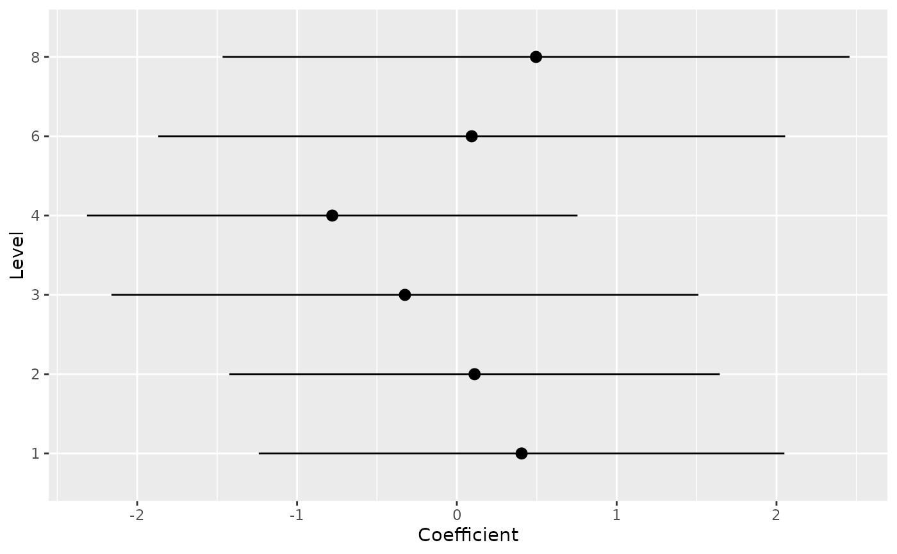

Group-specific parameters of mixed models random effects
Source:R/estimate_grouplevel.R, R/reshape_grouplevel.R
estimate_grouplevel.RdExtract random parameters of each individual group in the context of mixed models, commonly referred to as BLUPs (Best Linear Unbiased Predictors). Can be reshaped to be of the same dimensions as the original data, which can be useful to add the random effects to the original data.
Usage
estimate_grouplevel(model, ...)
# Default S3 method
estimate_grouplevel(model, type = "random", ...)
# S3 method for class 'brmsfit'
estimate_grouplevel(
model,
type = "random",
dispersion = TRUE,
test = NULL,
diagnostic = NULL,
...
)
reshape_grouplevel(x, ...)
# S3 method for class 'estimate_grouplevel'
reshape_grouplevel(x, indices = "all", group = NULL, ...)Arguments
- model
A mixed model with random effects.
- ...
Other arguments passed to
parameters::model_parameters().- type
"random"or"total". If"random"(default), the coefficients correspond to the conditional estimates of the random effects (as they are returned bylme4::ranef()). They typically correspond to the deviation of each individual group from their fixed effect (assuming the random effect is also included as a fixed effect). As such, a coefficient close to 0 means that the participants' effect is the same as the population-level effect (in other words, it is "in the norm"). If"total", it will return the sum of the random effect and its corresponding fixed effects, which internally relies on thecoef()method (see?coef.merMod). Note thattype = "total"yet does not return uncertainty indices (such as SE and CI) for models from lme4 or glmmTMB, as the necessary information to compute them is not yet available. However, for Bayesian models, it is possible to compute them.- dispersion, test, diagnostic
Arguments passed to
parameters::model_parameters()for Bayesian models. By default, it won't return significance or diagnostic indices (as it is not typically very useful).- x
The output of
estimate_grouplevel().- indices
A character vector containing the indices (i.e., which columns) to extract (e.g., "Coefficient", "Median").
- group
The name of the random factor to select as string value (e.g.,
"Participant", if the model wasy ~ x + (1|Participant).
Details
Unlike raw group means, BLUPs apply shrinkage: they are a compromise between the group estimate and the population estimate. This improves generalizability and prevents overfitting.
Examples
# lme4 model
data(mtcars)
model <- lme4::lmer(mpg ~ hp + (1 | carb), data = mtcars)
random <- estimate_grouplevel(model)
# Show group-specific effects
random
#> Group | Level | Parameter | Coefficient | SE | 95% CI
#> ----------------------------------------------------------------
#> carb | 1 | (Intercept) | 0.41 | 0.84 | [-1.24, 2.05]
#> carb | 2 | (Intercept) | 0.11 | 0.78 | [-1.42, 1.65]
#> carb | 3 | (Intercept) | -0.32 | 0.94 | [-2.16, 1.51]
#> carb | 4 | (Intercept) | -0.78 | 0.78 | [-2.31, 0.75]
#> carb | 6 | (Intercept) | 0.09 | 1.00 | [-1.87, 2.05]
#> carb | 8 | (Intercept) | 0.50 | 1.00 | [-1.47, 2.46]
# Visualize random effects
plot(random)

# Reshape to wide data...
reshaped <- reshape_grouplevel(random, group = "carb", indices = c("Coefficient", "SE"))
# ...and can be easily combined with the original data
alldata <- merge(mtcars, reshaped)
# overall coefficients
estimate_grouplevel(model, type = "total")
#> Group | Level | Parameter | Coefficient
#> -----------------------------------------
#> carb | 1 | (Intercept) | 30.18
#> carb | 2 | (Intercept) | 29.88
#> carb | 3 | (Intercept) | 29.45
#> carb | 4 | (Intercept) | 28.99
#> carb | 6 | (Intercept) | 29.87
#> carb | 8 | (Intercept) | 30.27